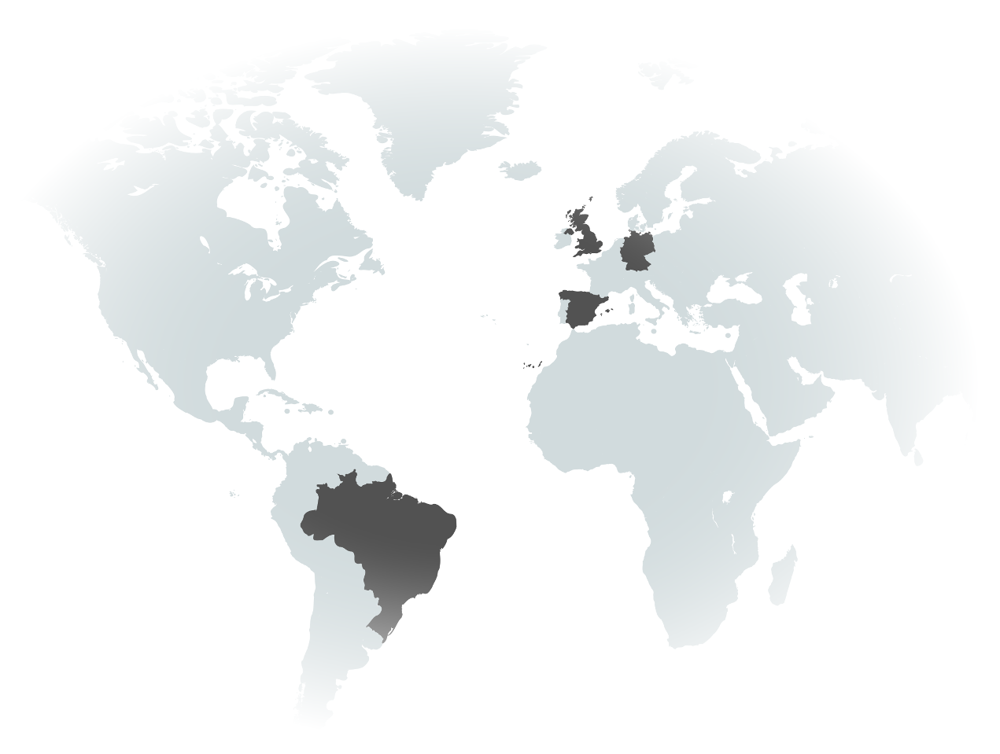

Hi, I am Alex Duarte.
I am a physicist and AI scientist with experience on experimental optical microscopy and deep learning computer vision. Nowadays based on Barcelona Spain, I have worked abroad over the past years passing for Germany and UK. My focus is develop machine learning algorithms allied with optical resources to tackle experimental challenges.
About Me
I am PhD physicist and AI researcher with interdisciplinary experience along Europe and south America. I have a PhD degree in physics from my hometown university, south of Brazil, carried with a 2 years exchange program at Heidelberg University in Germany. My first post-doc I did at Oxford University in United Kingdom. Currently I am based in Spain, working at ICFO - institute of photonics sciences developing deep learning computer vision techniques applied to super-resolution microscopy and single molecule localization.
From a capital city on south of Brazil (Porto Alegre) university I had a excellent physics education and did my firsts steps into an optics laboratory, and I also had my firsts experience with computational modeling (C++), including a very interesting course of physics models applied to economy. During my PhD exchange program at professor Marcus Motzkus group in Heidelberg, I learnt and developed state-of-the-art coherent microscopy techniques like Coherent anti-Stokes Raman Spectroscopy (CARS). Here I also developed algorithms (LabView) to laboratory instrument control and spectral data analysis.
In Oxford I had an enriching experience post-doc working with professor Philipp Kukura interdisciplinary research group. There I collaborated with researchers from different background, mainly chemistries and biologists, developing ultrafast dynamics studies in interesting biomolecules like retinal schiff bases. Furthermore, I performed a end-to-end experiment building a wide-field Fourier transform CARS microscopy published here in Scientific Reports journal.
Nowadays at professor Niek van Hulst molecular nanophotonics group, I had a chance to turn my academic experience more towards to computational science. Following my constant interest for coding I decided invest in Artificial Intelligence applied to scientific challenges, specifically to single molecule localization in order to improve super-resolution imaging techniques like Stochastic Optical Reconstruction Microscopy (STROM).
Personal Interests
Music (and play), Cinema, Sculpture, Museums, Dogs, Running, Hiking, Skating, Beach, Eating Good, Drinking Good (Specialty Coffee and Craft Beers), Rural Tourism.
Skills
Programming
Machine Learning Methods
- Image Segmentation (U-Net)
- Object localization (Faster-RCNN)
- Semi-Supervised (U-Net, Autoencoders)
- Image Reconstruction (Autoecoders)
- Classification (XGBoost, ConvNets)
- Unsupervised (PCA, t-SNE)
Lab
- Scanning Microscopy
- Time-Resolved Spectroscopy
- Vibrational Spectroscopy
- Lasers
- Specialized Cameras
- Lock-In Amplifiers
Experience
ICFO - Institute of Photonic Sciences
Postdoctoral Researcher
2016 - Present
Barcelona - Spain
- Molecular Nanophotonics Group - Prof. Niek van Hulst
- Deep Learning single molecule localization
- Single Molecule Fluorescence
- Scanning Microscopy

Oxford University
Postdoctoral Research Associate
2014 - 2016
Oxford - UK
- Kukura lab - Prof. Phillip Kukura
- Wide-field Microscopy
- Ultrafast Spectroscopy
- Biomolecular Dynamics
Education

Heidelberg University
PhD in Physics (Exchange Program)
2011 - 2013
Heidelberg - Germany
- Motzkus Group - Prof. Marcus Motzkus
- Vibrational Microscopy
- Coherent Raman Spectroscopy
- Tissues and Carbon Nanotubes Studies

UFRGS Federal University
M.SC. and PhD in Physics
2009 - 2014
Porto Alegre - Brazil
- PhD Thesis - Multiplex CARS applied to carbon nanotubes and brain tissues
- Laboratory Instrumentation
- Physics and Optics Fundamentals
Projects
Object detection for single molecule localization image reconstruction.
Cells segmentation of imaging mass cytometry images.
Endoscopy tissues classification with deep learning.
Prediction of the sale price of properties in London.
Scientific Reports - DOI:10.1038/srep37516
J. Physical Chemistry Letters - DOI:10.1021/acs.jpclett.6b02387
Journal of American Chemistry Society - DOI:10.1002/10.1021/jacs.5b06492
Journal of Biophotonics - DOI:10.1002/jbio.201300052
Journal of Biophotonics - DOI:10.1021/nl304371x